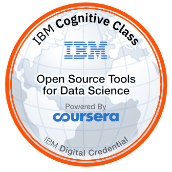
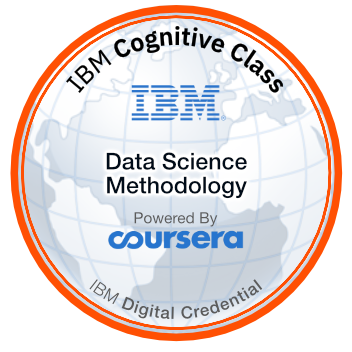
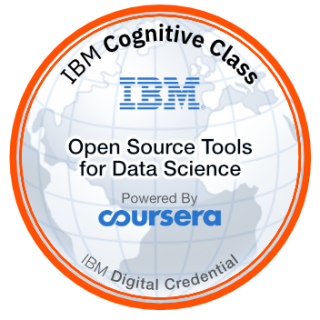
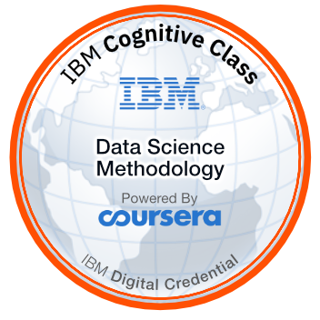

Technical Skill Trainer July 2019 - Present
Technical Skill Trainer July 2019 - Present
Study and implementation of various machine learning algorithms such as
• Linear, Polynomial, Logistic, Softmax Regression models and Decision trees, Random forests, Support vector machines, Naive Bayes classifier, KNN classification models in supervised learning
• Dimensionally reduction, Principal component analysis, Anamoly Detection, and clustering in unsupervised learning
Developing and building various IoT Prototypes based on Real-time applications using Arduino and Python programming.
• Working with 8051 microcontroller, development boards like Arduino UNO, Raspberry Pi, Node MCU, Bluetooth Module, WiFi Module.
• Working with IoT sensors like Ultrasonic, LDR, IR, Humidity, Moisture, GPS, GSM, FingerPrint, Servo Motor, and LCD Display.
• Working with different IoT cloud platforms for connecting my devices like Blynk, IFTTT, AWS IoT, etc.
 


